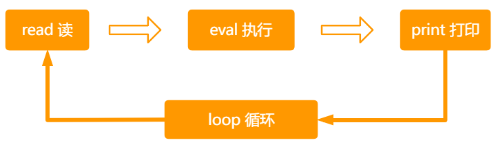

一、js简介
- HTML、CSS、JavaScript 三者之间的关系
前端三层 语言 功能 类比1 类比 2 结构层 HTML 搭建结合、放置部件、描述语义 房子的框架 人的骨架 样式层 CSS 美化页面、实现布局 对房子装修 给人打扮、化妆 行为层 JavaScript 实现交互效果、数据收发、表单验证等 房子通水、通电 人的各种行为
- 交互效果：比如网站看到的鼠标滑动显示的下拉菜单、轮播图、选项卡等网页特效
- 数据收发：网站页面的数据，都是能通过 ajax 向后台发送请求，然后后台把数据返回给到前端，我们再把数据渲染到页面中。
- 表单验证：当我们提交一个注册表单时，会验证我们输入的邮箱、手机、密码等格式是否符合要求，这些都是通过 JS 来验证的。
- JavaScript 发展史
布兰登.艾奇 (Brendan Eich) JavaScript 创始人， 人称 JS 之父
JavaScript 创建背景
- 1995 年 34 岁的系统程序员 Brendan Eich，任职于网景公司（Netscape ，美国一家专注浏览器的公司）
JavaScript当时开发的目的，处理用户在浏览器端的输入验证（常说的表单验证）- 布兰登.艾奇，仅用 10 天时间就把 JavaScript 设计出来了 😃
JavaScript的前身叫LiveScript，后面改名为JavaScript
Java 与 JavaScript 的关系 ？
本质上是没有任何关系，就好像老婆与老婆饼的关系，雷锋与雷峰塔的关系。
JavaScript 的早期设计思路
- 借鉴 C 语言的基本语法
- 借鉴 Java 语言的数据类型和内存管理
- 借鉴 Scheme 语言，将函数提升到”第一等公民”(first class)的地位
- 借鉴 Self 语言，使用基于原型(prototype)的继承机制
所以，JavaScript 语言实际上是两种语言风格的混合产物 -（简化的）函数式编程 +（简化的）面向对象编程
JavaScript 的地位
- JavaScript 垄断了浏览器端脚本语言，绝对唯一的霸主
在这之前其实有三种脚本语言 VBScript 、JScrip、JavaScript 。随着时间的推移，有两种被淘汰了，只剩下 JavaScript
- 任何做浏览器端开发的工程师都不可能绕开 JavaScript
- js 现在能做什么？
- 表单动态校验（密码强度检测）js 产生的最初目的
- 网页特效
- 服务端开发 Node.js (Node.js 是 JS 的一个运行平台)
- 桌面程序(Electron)
- APP(Cordova)
- 游戏开发(cocos2d-js)
- 前端 与 后端
如何理解前端（客户端）
- 所谓前端（客户端），其本质就是直接面向用户的那一端。
- 前端主要是用来：处理界面，交互逻辑，用户能看见的东西，是我们前端开发要解决的问题
- 前端开发的主要编程语言：HTML、CSS、JavaScript
如何理解后端（服务端） - 后端主要是用来：操作数据库，实现数据的增删改查，处理数据。
- 后端开发主要的编程语言：Java、Python、PHP、C/C++、GO
- 前端和后端通过 HTTP 协议进行传输
JavaScript 是一种前端开发语言，为什么他现在可以做服务端开发 ？
在 2009 年，JavaScript 诞生了一个著名的平台NodeJS。NodeJS 就是 JavaScript 的一个运行平台，NodeJS 的诞生，让 JS 的触角延伸到了服务器端。 也就是说随着 NodeJS 的诞生，JS 也可以操作数据库了，也就可以做服务端开发。
- ECMAScript 与 JavaScript 的关系
- 1996 年 11 月，网景公司将 JavaScript 提交给欧洲计算机制造商协会（ECMA）进行标准化。
- 1997 年，欧洲计算机制造商协会（ECMA）设置了 JavaScript 的标准，命名为 ECMAScript
JavaScript 有 ECMAScript 的关系
- JavaScript 是语言，ECMAScript 是标准
- JavaScript 实现了 ECMAScript 标准，而 ECMAScript 标准规范了 JavaScript
- JavaScript 知识体系
- 语言核心（ECMAScript5）
- DOM （Document Object Model）文档对象模型
- BOM （Browser Object Model）浏览器对象模型
语言核心（ECMAScript5）
- 我们接下来要学习的 JS 语言核心，就是ECMAScript5中的标准，标准中规定了语言的
- 基本语法
- 类型
- 语句
- 关键字
- 保留字
- 操作符
- 全局对象
学习完这个后，才会再学习后面的 ECMAScript6、7、8、9….13
- ES6 对应的是 ECMAScript2015( ES2015）改动最多，主要是让 JS 工程化，构建化，所以我们常把 ES6 之后的归到 ES6。
- 其它不同版本间的对应关系如下
- ES7（ES2016）、ES8（ES2017）、ES9（ES2018）、ES10（ES2019）、ES11（ES2020）、ES12（ES2021）、ES13（ES2022）
DOM（Document Object Model）文档对象模型
DOM 将整个页面抽象为一组分层节点（DOM 树），开发者可以通过操作 DOM 树来随心所欲的控制网页的内容和结构和样式。
我们常见的网页特效，就是通过 JS 来操作 DOM 实现的
- Document文档，表示的就是整个HTML网页文档
- Object对象，表示将网页中的每一个部分都转换为一个对象
- Model模型，表示对象之间的关系，这样方便我们获取对象。
BOM（Browser Object Model）浏览器对象模型
- BOM 用于支持访问和操作浏览器的窗口，JS 通过操作 BOM，可以获取窗口的大小，窗口输入的地址，控制前进和后退，监听窗口大小的改变等
- JavaScript 为何称为脚本语言
- 所谓的脚本语言：是指不需要提前编译，运行的过程中边编译，边执行。
- JS 本质上就是在运行过程中边编译，边执行的，JS 是由 JS 解释器（JS 引擎）来逐行进行解释并执行
什么是 JS 解释器 ？
这就需要我们了解浏览器的两大组成部分：渲染引擎 和 JavaScript 引擎
- 渲染引擎：用来解析 HTML 与 CSS，俗称内核，比如 chrome 浏览器的 blink，老版本的 webkit
- JS 引擎： 也称为 JS 解释器，用来读取网页中的 JavaScript 代码，对其处理后运行。比如 chrome 浏览器的 V8 引擎。
浏览器本身并不会执行 JS 代码，而是通过内置 JavaScript 引擎（解释器）来编译和执行 JS 代码。JS 引擎执行代码时逐行解释每一句源码（转换为机器语言），然后由计算机去执行。
二、javascript基础语法
- 书写位置
行内式
- 直接写在标签上，有点类似行内样式，这种写法基本不用，只做了解。
<div onclick="alert('主人，你好');">点我</div> <a href="JavaScript:;">禁止页面刷新</a>
内部js
- JS 代码直接写在写在之间的文本内容，在浏览器中要转换为 js 脚本执行，现在可以省略不写。
外部js
- 把 js 代码，单独保存在一个 js 文件中
- 通过
<script>标签的 src 属性来加载 js 文件<script>标签可以写在 head 或 body 标签中- 如果采用了外部 JS 的写法，则
<script>标签中，不能再写 JS 代码，写了也不会生效<!--错误写法，如果src属性中引入了外部js文件，则<script>标签不能再写js代码--> <script src="js/demo.js"> alert('错误写法，弹窗不会弹出'); </script>
注意1：在实际的开发中，我们常用的就是外部 JS 这种写法，因为他有很多优点
优点：
结构彻底分离
多页面可以进行复用
后期好维护修改
浏览器可以根据特定的设置缓存所有外部 JS 文件，所以多个页面都用到同一个文件，那么这个文件只需要下载一次，页面加载速度更快。如果后续再打开网页，浏览器会直接从缓存中读取。
唯一缺点：
- 增加请求数（外部文件），但相对上面的优点，完全可以忽略不计。
提示：html文件是不会被缓存的！但css和js文件会被缓存，如果做了修改，就得重命名才能重新加载
注意2：Javascrip 文件不能脱离 HTML 网页运行，只有在后面学到 Node.JS 时，JS 可以在 NodeJS 平台上独立运行。
- JS 注释
单行注释：
// ……- 快捷键：
ctrl+/
多行注释：/* */- 快捷键
Alt + shift + a
JavaScript 中的注意事项
- 严格区分大小写
- 语句字符都要是英文状态下（字符串可以使用任意字符）
- 每条语句以分号（;）结尾
- 如果不写分号，意味着由解析器来确定语句在哪里结尾。
- 加分号有助于在某些情况下提升性能，因为解析器会尝试在合适的位置补上分号以纠正语法错误
- 如果不加分号，在后期压缩代码时，有可能会造成语法错误
- 而且有些时候，浏览器会加错分号，所以在开发中分号必须写
- JS 中会忽略多个空格和换行
- 可以利用空格和换行，对代码进行格式化，这样写出来的代码更美观
JS 中的输入输出语句
alert('弹窗')
- alert() 语句，会在页面打开时，弹出弹窗
- alert()语句，会阻止程序的执行，他会在此代码执行确认后，才会接着执行后面的代码
- 可以用来调式代码
console.log('控制台输出内容')
- 浏览器控制台打印输出信息
- 他不会打断程序运行
- 常用来调试代码
- 可以一次打印多条内容，每条内容间用
,逗号隔开
prompt('提示用户输入信息')
- 浏览器弹出输入框，用户输入内容
alert、console.log和prompt中，如果输入的是数字、已声明的变量，则不用加引号；如果输入的是字符串，则要加上''单引号或""双引号包裹。
三、javascript变量与字面量
- 硬盘、内存、CPU 三者关系
硬盘，内存，CPU 三者各自的作用
名称 作用 硬盘 负责程序和数据的永久存储，断电数据不丢失的特点 内存 负责连接CPU和硬盘；存储临时使用的数据;保存从硬盘读取的数据，提供给 CPU 使用；保存 CPU 的一些临时执行结果，以便 CPU 下次使用或保存到硬盘；断电数据就会清空，丢失 CPU 运行总指挥，负责发指令，数据处理与计算
他们三者之间如何工作的？
当我们要运行某个程序时：
- CPU首先接受到我们的命令，
- 然后它(CPU)告诉硬盘：我要运行存储在你那的程序，你把该程序送到内存去
- CPU对内存说，我让硬盘把程序送到你这里来了，你保存一下。
- 等该程序被完整的送到内存之后。CPU就开始执行程序，可以进行一系列操作
- 当我们在编辑文档等程序时，如果没有
ctrl+s，那么此时编辑的数据是存储在内存的，只有ctrl+s后才会保存到硬盘- 因此，没有
ctrl+s的数据，一旦断电就无法恢复，因为内存只能临时存储数据
CPU 可以直接从硬盘中读取数据，为什么要在中间加一个内存呢？
- 因为CPU的处理速度特别快，而硬盘的读取和存储数据的速度特别的慢
- 如果直接从硬盘读数据，而硬盘的速度跟上不 CPU 的速度，就会对 CPU 造成很大的浪费，同时我们操作电脑时，就会很卡。
- 而内存的数据就很快了，他可以跟上 CPU 的处理速度。
- 内存就是为了解决 cpu 和硬盘之间速度不匹配的冲突，内存是由电流实现的存取速度，相当快，不过断电就丢失。
总结
| 名称 | 作用 | 速度 | 类比 |
|---|---|---|---|
| 硬盘 | 负责程序和数据的永久存储，断电数据不丢失的特点 | 很慢 | 大仓库 |
| 内存 | 负责连接CPU和硬盘；存储临时使用的数据；断电数据就会清空，丢失 | 很快，几乎硬盘的 100 倍 | 中转站 |
| CPU | 运行总指挥，负责发指令，数据处理与计算 | 很快，几乎硬盘的 100 倍 | 车间 |
CPU，内存 决定你电脑运行的快慢，硬盘决定你可以放东西的多少 ！
什么是变量
- 大白话：变量就是一个用来装东西的盒子，再往深里说，他就是用来存放数据的容器。
- 变量的本质： 变量是程序在内存中申请的一块用来存放数据的空间。
如何声明变量
- 在 js 中，使用
var关键词来声明一个变量 - a是自定义的变量名
- 使用 var 关键字声明变量后，计算机会自动为变量分配内存空间，用来存储变量的值
- 变量声明后，就可以给变量赋值，
=等号表示赋值
var a; a="小米"- 通过变量名就可以访问变量在内存中存储的值。
- 赋值后我们就可以使用他了，我们可以在控制台通过输出语句输出变量 a 的值
console.log(a);- 在 js 中，使用
变量的初始化
我们在声明一个变量的同时为其赋值，称为变量的初始化
var a="张三"; concole.log(a);更新变量的值
- 一个变量被重新赋值后，他之前的值就会被覆盖
var name = "张三"; // 给变量name 重新赋值 name = "李四"; console.log(name);同时声明多个变量
先声明后赋值：var x,y,x; x=1; y=2; z=3; console.log(x,y,z);
声明的同时赋值
var x=1, y=2, z=3; console.log(x,y,z);
声明过程可赋值，可不赋值
var x, y = 1, z = 4; //在声明之后为x赋值 x = 2; console.log(x, y, z);
声明变量的几种特殊情况
- 声明变量，但没有赋值，默认值为
undefined我们后期如果要判断一个变量是否成功赋值，我们就可以通过检测他的值是否是 undefined 来判断
- 不声明变量,直接进行赋值
<script> x = 7; // 控制台输出得到的结果是 7 console.log(x); </script>这是 js 的一个语法特性，只需要了解就好，在实际开发中非常不推荐这样写。
- 直接输出一个不存在的变量
<script> // 控制台**会报错** z is not defined console.log(z); </script>- 声明变量，但没有赋值，默认值为
变量的命名（标识符）
变量的命名必需要遵守一定的规则。
- 标识符：在 js 中所有可以由我们自主命名的都可以称为标识符
标识符的命名规则
- 只能由字母，数字，_下划线，$组成，但不能以数字开头
- 严格区分大小写，a 和 A 是两个不同的变量
- 不能使用关键字或保留字做为变量名
关键字和保留字
- 关键字：就是 JavaScript 语言本身已经使用的一些单词。这些单词具有特定的用途，用户自定义的标识符（名字）不能与关键字相同 。
- 保留字：就是 JavaScript 语本身没有使用，但是考虑后期随之着 JS 的发展，可能会使用的一些单词。这些单词建议用户不要使用。
- 以下是部分关键字和保留字：
abstract arguments boolean break byte case catch char class* const continue debugger default delete do double else enum* eval export* extends* false final finally float for function goto if implements import* in instanceof int interface let long native new null package private protected public return short static super* switch synchronized this throw throws transient true try typeof var void volatile while with yield eval arguments
- 推荐两种优秀的命名法
驼峰命名（最推荐）- 首个单词小写，其余每个单词开头字母大写
myFirstName 、myStudentCount 、getBoxColor、navList不建议使用全小写 myfirstname，可读性差
- 首个单词小写，其余每个单词开头字母大写
C 语言风格
- 所有单词全小写，单词之间用_下划线分隔
my_first_name 、 my_student_count
匈牙利命名法（了解即可）
- 基本原则是：变量名=属性+类型+对象描述
// i 提示变量类型为 整型 iMyStudentCount;
- 字面量
可以理解为不可能发生改变的(固定)值。他就是他的字面意思。
<script> var A = 1; var A = "我爱你"; var A = "优秀"; </script>- 源代码解读
- 上面代码中，1，'我爱你'，'优秀' 就是字面量。
- A 是变量，A 可以表示 1，也可以表示'我爱你'，还可以表示'优秀'。
- 在实际开发中，我们都是通过变量来保存一个字面量，然后只需要在每次用到字面量的地方，调用下该变量就好
- 源代码解读
四、综合案例
弹出用户输入的信息
需求：
- 当用户打开浏览器时，弹出输入框，要求用户输入姓名，点击确认后，以弹窗形式，显示用户的姓名。
实现思路： - 使用 prompt() 函数弹出输入框，让用户输入内容
- 要通过变量来接受 prompt() 函数的返回值
- 通过 alert()函数，显示结果
- 当用户打开浏览器时，弹出输入框，要求用户输入姓名，点击确认后，以弹窗形式，显示用户的姓名。
如何交换两变量的值
需求：
- 定义两个变量同时赋值，然后交换两个变量中的值。
实现思路： - 这里我们可以用现实生活中的例子来解答这道题
- 首先定义两个变量 apple 和 pear，然后分别赋值"苹果"和"梨子"
- 我们把这两个变量想像成两个盘子，变量的值，想像成盘子中放入了苹果和梨子。
- 现在的需求就是要把苹果放到 pear 盘中去，把梨子放到苹果盘子中去。
- 所以我们需要再借助第三个盘子，再声明一个变量 desk，不赋值。相当于空盘子
- 然后把苹果放到空盘子中 desk 中，再把梨子放到苹果盘中，再把 desk 盘中的苹果放到梨子盘中，就 ok 了
- 定义两个变量同时赋值，然后交换两个变量中的值。
五、处理报错和REPL环境
处理报错
在初学 JS 的时候，我们经常会写错代码，造成控制台报错，初学者经常会遇到以下两种常见错误
- Uncaught SyntaxError：未捕获的语法错误,
- 常见的是使用了中文符号
- Uncaught ReferenceError：引用错误
- 常见的是：误把字符串当变量用，或找不到变量，变量未定义
- Uncaught SyntaxError：未捕获的语法错误,
REPL 执行环境
- REPL(Read-Eval-Print-Loop)：交互式解析器
- 在 REPL 环境下，可以定义和运行变量、函数、对象
console控制台其实也是一个 REPL 环境，可以使用它临时测试表达式的值
在控制台书写代码后，按回车，就会进入上面四个流程：
- 先读取代码，再执行，执行后把结果打印出来，然后又可以重复刚才的动作。
- 接着在控制台书写代码，然后回车，又会进入上面四个流程